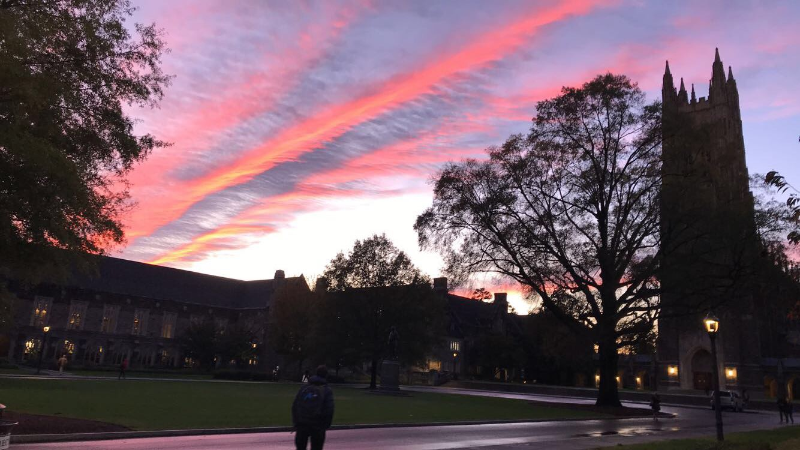
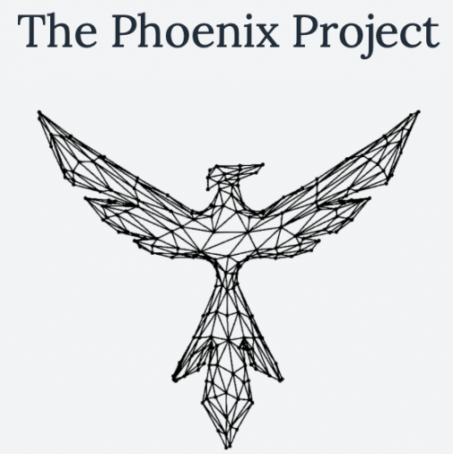
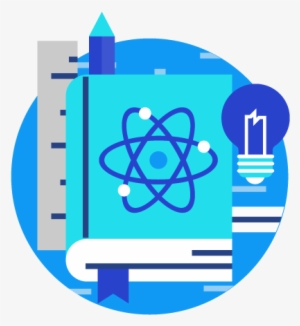

Duke Center for Metamaterials and Integrated Plasmonics
Mar 2020 - present

Wanting to get involved in research early on, I contacted my ECE 110 professor Dr. David Smith to inquire about his lab work. A few weeks later I began my job conducting research in his lab. As a first-year with little knowledge going in, I saw it as an incredible opportunity for experiential learning and growth. Since I began in March 2020 working under the guidance of Dr. Jonah Gollub, every day has been filled with unfamiliarity which, although confusing at times, offers an exciting resource of uliminated learning. Although CoViD-19 has thrown a wrench in everyone's schedules, I have continued my research from home, currently utilizing Python, Unity, and C# as I investigate a positional tracking system for use with the metamaterial imager being developed in the lab.
Keck Center for Topological Dynamics
Jun 2017 - Aug 2017
As my first involvement in research, I spent the summer working full time in NJIT's Biophysics lab under Dr. Camelia Prodan. Familiarizing myself with the setting and learning how to conduct research, I enjoyed the exploratory nature of the laboratory and constant opportunity for learning. Throughout the research internship my focus was: Determining and Analyzing Waves and Gaps in Two-Dimensional Wave Tanks Containing Select Patterns. With the conclusion of the internship, I wrote a report detailing my discoveries and contributions and presented to faculty and my peers. ADD LINKS TO THESE!!!
Duke University
Aug 2019 - May 2023
In just my first year at Duke I have already grown and learned so much and am excited for all the still is to come in my next three years. I planned on majoring in Mechanical Engineering coming to Duke, but discovered my true passion in circuits, computers, and coding and instead am double majoring in ECE and CS. To see what courses I have taken and what I have learned from them click here.
Duke Club Ice Hockey Team

Representing Duke on the ice is an honor and privelege for me. Practicing and playing games throughout both the spring and fall semesters, I love the commitment, dedication, and comradery that the whole team shares. Over this past winter break we had the incredible experience of traveling to London, England to compete on the ice and explore the city as a team. My teamates and their passion both on and off the ice are why I am so proud to be a member of the team. Click here to see some pictures from London.
Duke Phoenix Project
May 2020 - Aug 2020
More to come as I am assigned to my project for the summer!
DukeEngage - Vietnam
Jun 2020 - Aug 2020
Until CoViD-19 caused the unforunate but necessary cancellation of all DukeEngage programs, I was accepted and eagerly awaiting this summer, where I would have been participating in DukeEngage's program in Vietnam. The two month service-learning project in Quang Tri, Vietnam had to main components: building infrastructure for a rural community and teaching English to Vietnamese students in a local school. It was truly the perfect program for me, as it combined my love of building and engineering with my passion for tutoring and teaching. Having already attended a preparation course for the program, I was disappointed when the program was officially cancelled. But setbacks often shed light on new opporunities, and in this case my role as a __________ at ________ through the Phoenix Project is a perfect example of this.
United Service Organizations Volunteer
Mar 2017 - present

It is so easy to take for granted the freedom and safety we have in America because of the military service members who dedicate their lives to protecting us. It is so important that we support and show our appreciation for these brave men and women, which is why I became a USO volunteer, serving active and retired military members in their travels. Providing hospitality services and information, I ensure the USO center is a clean, comfortable, and welcoming place for our service members to relax and feel appreciated. From cadets attending West Point to parents with young children to retired service members who served for 20 years, the people I meet while volunteering are some of the most genuine and truly inspiring. They are why being a USO volunteer is so meaningful to me.
America Reads America Counts Tutor
Sep 2019 - Dec 2019

Teaching and tutoring was a meaningful part of my high school experience, which is why I decided to be a tutor for ARAC last semester. Tutoring in the Durham Public School system, I taught math and reading to fourth grade students and kindergarteners each once a week. Faciliating a positive learning environment, reinforcing important fundamentals to help students maintain their confidence in the classroom, and bonding with my young, enthusiastic peers is why tutoring was a highlight of both mine and my students' week. Guiding a student from initial confusion with a concept to possessing the confidence to work independently is such a fulfilling experience and why I enjoyed tutoring so much.
West Orange High School Volunteer Tutor
Sep 2017 - May 2019
As a volunteer tutor, I served as a resource for my fellow high school students who were struggling in their math or science classes. Tutoring during lunch and after school, I acted as a resource for students to ask questions, receive help understanding topics, and develop positive studying and test-taking habits. The reason I enjoyed tutoring so much was the students who were truly remarkable. When they struggled, they actively sought help and voluntarily put in the extra time needed to succeed rather than simply giving up. Each one possessed the motivation but just needed a little guidance and providing that for my peers was an amazing experience.
Jersey Mike's Subs Crew Member
May 2019 - Aug 2019

Working as a crew member at Jersey Mike's over the summer before leaving for Duke was a valuable experience. Starting out just cooking hot sandwiches on the grill, I quickly grew by learning and obtaining certifications in four additional positions. Soon I was preparing every type of made-to-order sandwich offered, baking bread, prepping ingredients, stocking inventory, sanitizing containers, and manning the register. Interacting with all types of customers and new situations almost every day, I improved my adapation skills and ability to handle adverse situations in a calm manner. Every employee's dedication to the company's core values of Desire for Growth, Integrity, Compassion, Servant Leadership, and Positive Attitude made being a member of the crew a notable growing experience.
United States Soccer Federation Certified Referee
Mar 2016 - Nov 2019
As a nationally licensed soccer referee, I officiated competitive youth soccer matches up to players Under-21. Working alongside two fellow referees each weekend during the regular season, refereeing up to five games in a day, and three referees during tournaments, refereeing up to 12 games in a day, I developed key collaboration and communication skills to ensure a safe, fair playing environment. Managing coaches, spectators, and sometimes even players who were older than me, I learned how to exert my authority on the field in a commanding, respectful manner to keep the game under control. Reading the speed, intensity, and other aspects of the game and adapt accordingly was an essential skill I continually improved upon and is relevant well beyond the bounds of the soccer field.
Courses Completed
Fall 2019
- EGR 101: Engineering Design and Communication
- EGR 103: Computational Methods for Engineers
- Math 212: Multivariable Calculus
- IE 290: Innovator's Workshop
- ECE 110: Fundamentals of Electrical and Computer Engineering
- CS 201: Data Structures and Algorithsm
- Math 216: Linear Algebra and Differential Equations
- Writing 101: Climate Crisis
West Orange High School
Sep 2015 - Jun 2019
High school is where I began discovering many of my passions. From working on smaller projects, like building a chair capable of supporting the average adult using just a limited supply of cardboard, in my engineering classes to massive projects, like an a 18-foot-tall trebuchet or a mutlifunctional robot, as a four year member (and two year vice president) of my school's TSA, I developed my love for engineering. Playing varsity ice hockey all four years, I grew my love for the game, giving my best on and off the ice to improve myself and my team. The Daughters of Israel Integenerational Service Program, a student-run program that paired students with senior senior citizens to facilitate meaningful conversation and intergenerational friendships, was a significant part of my high school experience, participating as a freshman and progressing to be the president by senior year. Volunteering with this program, as a tutor, and at the USO helped me discover my passion for community involvement and service. These experiences built a strong foundation for me to build upon and inform many of my current involvements at Duke.